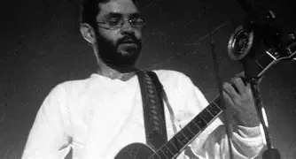
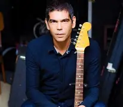
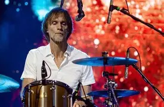
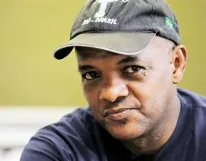

Renato Manfredini Júnior, conhecido como Renato Russo (1960–1996), foi um dos maiores ícones do rock brasileiro e vocalista da banda Legião Urbana. Nascido no Rio de Janeiro, mudou-se ainda jovem para Brasília, onde começou a se interessar por música e literatura. Desde cedo mostrou talento para compor, misturando poesia, filosofia e críticas sociais em suas letras.
Antes de fundar a Legião Urbana em 1982, Renato participou da banda Aborto Elétrico, que foi o embrião de parte do rock brasiliense da época. Na Legião, se destacou como letrista e intérprete de músicas que se tornaram verdadeiros hinos, como *Pais e Filhos*, *Tempo Perdido* e *Faroeste Caboclo*. Suas canções abordavam desde questões íntimas e existenciais até críticas políticas e sociais, conquistando milhões de fãs.
Além da carreira na banda, Renato também lançou trabalhos solo, como os álbuns *The Stonewall Celebration Concert* (1994) e *Equilíbrio Distante* (1995), explorando diferentes estilos e homenageando artistas internacionais.
Renato Russo faleceu em 1996, aos 36 anos, vítima de complicações relacionadas à AIDS. Mesmo com sua partida precoce, deixou um legado imenso para a música e a cultura brasileira, sendo lembrado até hoje como um artista visionário, intenso e profundamente humano.
Eduardo Dutra Villa-Lobos, conhecido como Dado Villa-Lobos, nasceu em 1965, no Rio de Janeiro. É guitarrista, compositor e produtor musical, além de ter sido um dos integrantes fundamentais da banda Legião Urbana. Sobrinho-neto do compositor clássico Heitor Villa-Lobos, cresceu em contato com a arte e desenvolveu uma identidade musical própria, marcada pela criatividade e sensibilidade.
Dado entrou na Legião Urbana em 1983, pouco antes da gravação do primeiro disco, assumindo a guitarra solo. Sua forma de tocar foi essencial para a sonoridade da banda, ajudando a criar arranjos que se tornaram inesquecíveis em músicas como *Tempo Perdido*, *Pais e Filhos* e *Será*. Mais do que um guitarrista, Dado também colaborava nos processos de composição e gravação, sendo parte importante da construção da identidade musical do grupo.
Após o fim da Legião Urbana, em 1996, Dado seguiu carreira solo e também como produtor. Lançou álbuns próprios, como *Jardim de Cactus* (2005), e participou de projetos musicais variados, sempre mantendo viva a ligação com o legado da Legião. Além da música, também se envolveu em trilhas sonoras para cinema e televisão.
Respeitado por sua trajetória, Dado Villa-Lobos é reconhecido não apenas como ex-integrante da Legião Urbana, mas como um artista que ajudou a moldar o rock brasileiro e que continua contribuindo para a cena cultural do país.
Marcelo Augusto Bonfá, conhecido como Marcelo Bonfá, nasceu em 1965, em Itapira, São Paulo. É baterista, compositor e pintor, e foi um dos fundadores da Legião Urbana, junto com Renato Russo.
Desde muito jovem demonstrou interesse pela música e, ao lado de amigos em Brasília, começou a tocar bateria em bandas locais até formar a Legião em 1982. No grupo, sua bateria firme e criativa foi peça fundamental na construção da sonoridade característica da banda. Bonfá não apenas acompanhava, mas ajudava a dar intensidade e emoção às canções, sendo parte essencial da identidade musical da Legião.
Após o fim da banda, em 1996, seguiu carreira solo, lançando discos autorais como *O Barco Além do Sol* (2004) e *Mobile* (2007). Além da música, também se dedica às artes visuais, com pinturas e exposições. Marcelo Bonfá é lembrado tanto por seu talento musical quanto por sua contribuição artística mais ampla.
Renato da Silva Rocha, conhecido como Renato Rocha ou “Negrete”, nasceu em 1961, no Rio de Janeiro, e faleceu em 2015. Foi baixista e também compositor, tendo integrado a formação clássica da Legião Urbana.
Renato entrou na banda em 1984, pouco antes da gravação do primeiro álbum, e permaneceu até o disco *As Quatro Estações* (1989). Sua contribuição foi marcante em sucessos como *Ainda É Cedo* e *Eduardo e Mônica*, onde o baixo ganhou destaque e ajudou a criar a atmosfera única das músicas.
Apesar de sua saída antes dos anos 1990, Renato Rocha foi peça-chave no período de maior ascensão da Legião Urbana, participando dos três primeiros álbuns que consolidaram o grupo como um dos maiores nomes do rock nacional.
Após deixar a banda, teve uma vida mais reservada e enfrentou dificuldades pessoais, mas seu talento e importância continuam sendo lembrados pelos fãs. Até hoje, é reconhecido como parte essencial da formação que levou a Legião Urbana ao auge.
